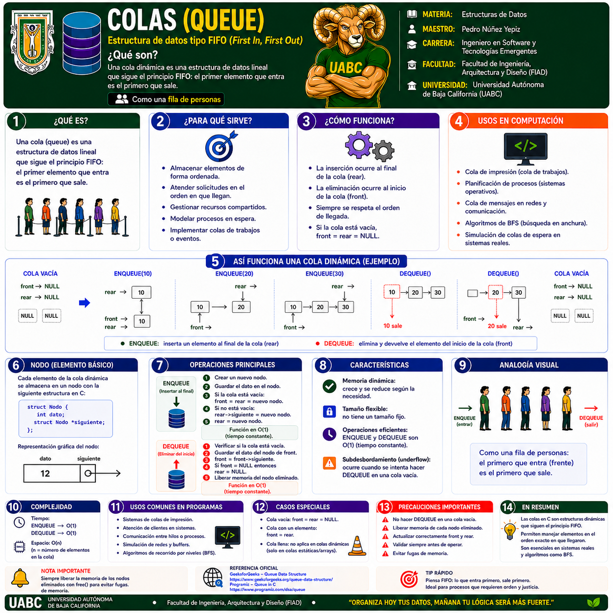
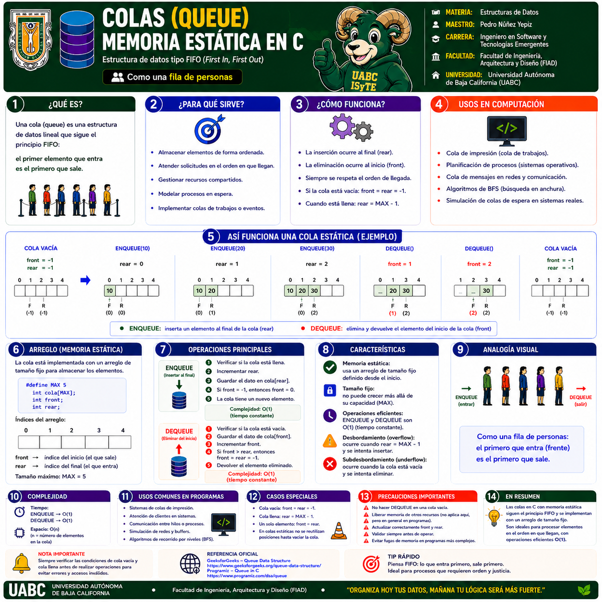
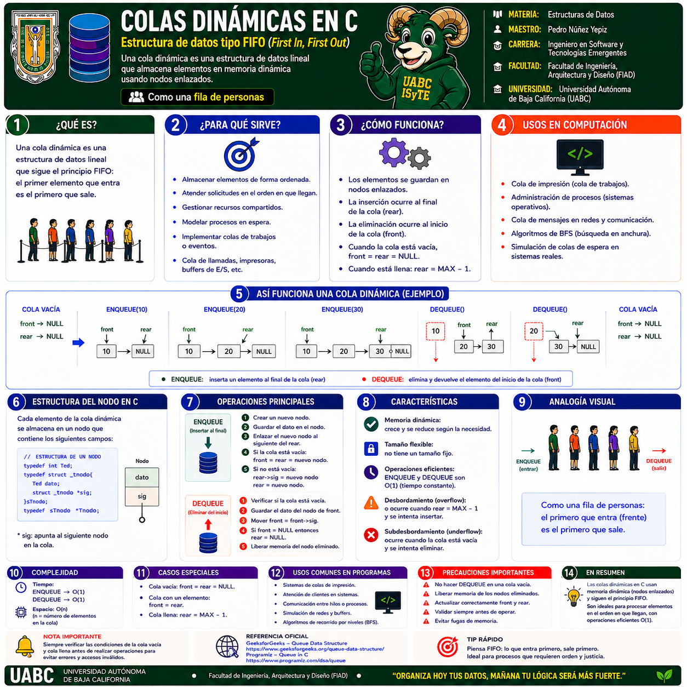
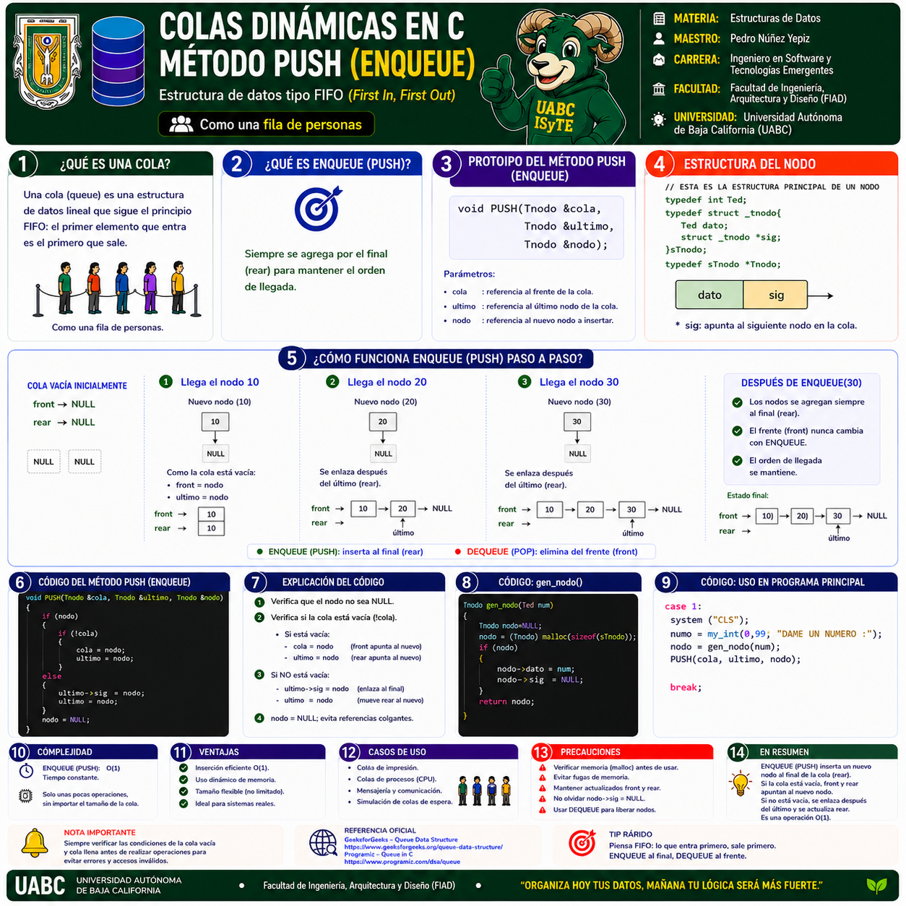
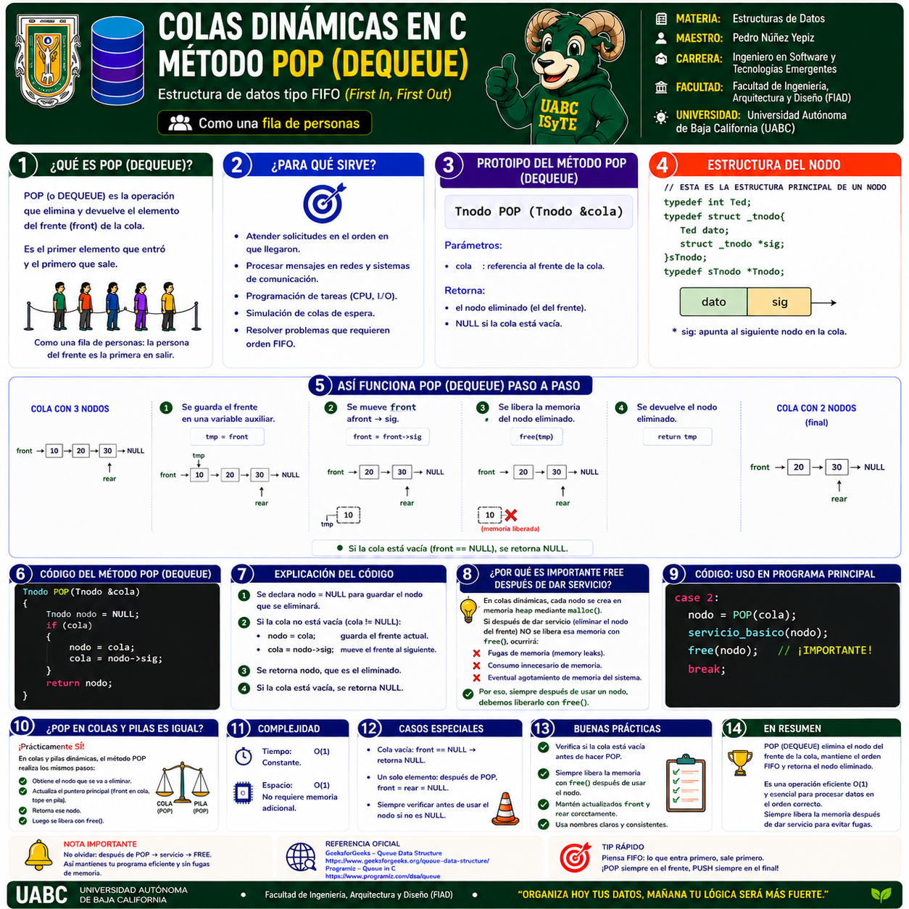

1 · Colas (Queue) · Conceptos fundamentales
Principio FIFO, estructura del nodo, operaciones principales, complejidad, casos especiales, aplicaciones y analogía de una fila de personas.
Selecciona cualquier infografía para abrirla a pantalla completa. En la vista ampliada puedes usar Zoom +, Zoom −, las flechas anterior/siguiente o la tecla Esc para cerrar.

Principio FIFO, estructura del nodo, operaciones principales, complejidad, casos especiales, aplicaciones y analogía de una fila de personas.

Implementación mediante arreglo, uso de FRONT y REAR, ENQUEUE, DEQUEUE, límites de capacidad y condiciones especiales.

Nodos enlazados, punteros FRONT y REAR, memoria dinámica, operaciones fundamentales y ventajas frente a una cola de tamaño fijo.

Explicación paso a paso de cómo insertar un nuevo nodo al final de la cola y actualizar el puntero REAR.

Movimiento del FRONT, recuperación del nodo, actualización de enlaces y liberación de memoria después de dar servicio.